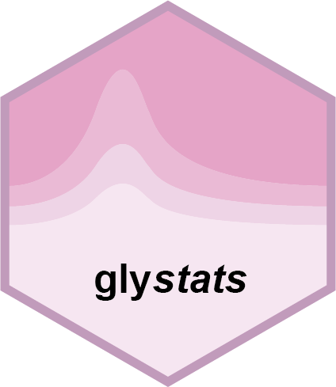

Compare two independent groups by empirical Bayes analysis of microarrays
gly_ebam.RdEstimate each feature's posterior probability of differential abundance using EBAM. Positive scores indicate a higher mean in the test group on the analysis scale.
Usage
gly_ebam(
exp,
group_col = "group",
ref_group = NULL,
posterior_threshold = 0.9,
n_perm = 100L,
a0 = NULL,
seed = 1L,
add_info = TRUE,
log_transform = NULL
)Arguments
- exp
A
glyexp::GlycomicSE()orglyexp::GlycoproteomicSE()object, or anotherSummarizedExperimentcontaining expression data and sample information.- group_col
A character string specifying the column name in sample information that contains group labels. Default is "group".
- ref_group
A character string specifying the reference group. If NULL (default), the first level of the group factor is used as the reference. Only used for two-group comparisons.
- posterior_threshold
One posterior probability in
(0, 1](default 0.9), or a vector of distinct probabilities for comparing thresholds. For one threshold,calledidentifies features in the selected score tails. For a vector,calledisNAandthresholdsreports each choice.- n_perm
Requested number of label permutations, at least two. Uses all allocations if fewer exist. For more than 30,000 possible allocations, siggenes can draw the same allocation more than once.
- a0
Positive regularization constant in analysis units. The default uses the median Welch standard error of the tested features (
quan.a0 = 0.5in siggenes). A positive constant keeps scores defined when a permutation has zero within-group variance.- seed
Nonnegative integer seed for the permutations. The caller's random-number state is restored after fitting.
- add_info
A logical value. If TRUE (default), variable information from the experiment will be added to the result tibble. If FALSE, only the statistical results are returned.
- log_transform
NULL(default) usesmetadata(exp)$scaleto avoid logging data twice.TRUErequests the method's log transformation for raw data; if the input is already on"log","log2","log10", or"logx", it warns and uses the supplied values unchanged.FALSEalways uses the supplied values unchanged. This argument must be named when it follows....
Value
A glystats_ebam_res object inheriting from glystats_res.
get_tidy_result() returns one row per input feature in assay order.
.variablegives the SE feature ID (variablefor legacy experiments).ref_groupandtest_groupidentify the comparison.zis the signed EBAM score,posterioris the estimated probability of differential abundance, andlocal_fdr = 1 - posterioris the estimated posterior probability of the null for that feature.For a single threshold,
calleduses the inclusive lower and upper score cutoffs from siggenes. The backend follows each tail inward from its extreme. An isolated interior score with a high posterior can fall outside both tails.n_finitecounts finite analysis values. Excluded features have missing statistics and calls, with reason"non_finite","backend_missing_code", or"unestimable_variance"inexclusion.
thresholds gives the posterior threshold, score cutoffs, number called
(n_called), estimated null proportion (p0), and permutation FDR
(fdr) for those calls. FDR is p0 times the mean number of permuted
scores in the selected tails divided by n_called, capped at one.
An empty tail has a cutoff of infinite magnitude. When neither tail
calls a feature, siggenes reports FDR zero.
If siggenes leaves an empty upper tail undefined or splits tied scores
in its reported count, the table uses the inclusive count and the
fitted mean false calls at those same cutoffs to calculate FDR.
settings$n_perm records the request. diagnostics gives input and
tested feature counts, fitted a0, actual permutation rows
(n_permutations), and n_distinct_permutations. get_raw_result()
returns the fitted EBAM object with original one-based assay row
positions as its feature keys. The result also stores the input
meta_data, preprocessing settings, and SE identifiers mapping.
Details
Supply two independent groups with at least two samples each. Label
permutations assume exchangeability and preserve the group sizes. Use
gly_limma() for paired, blocked, or covariate-adjusted comparisons.
Install the optional backend with BiocManager::install("siggenes").
siggenes::ebam() divides the test-minus-reference mean difference by
the Welch standard error plus a0. It compares observed and permuted
score densities to estimate posterior probabilities across the eligible
features. Raw abundances use log2(x + 1e-6) by default. On relative
abundance and logx scales the direction refers to the supplied
normalization reference or transformed coordinate, respectively.
Features enter the fit when every analysis value is finite and the
within-group standard error is estimable and positive after rounding to
ten decimal places. The backend also reserves the finite value
-93074815 to indicate missing data. Each exclusion is reported and
keeps its original ID. The posterior estimates and FDR apply to the
retained family. Fitting the score density requires variation across
features.
The fit uses the full tail-count calculation (fast = FALSE). The
permutation budget passed to siggenes is capped at the number of possible
group allocations. For example, three samples per group give 20 allocations
even if n_perm = 100. This makes the denominator used for the null tail
counts equal the number of allocations actually evaluated.
References
Efron B, Tibshirani R, Storey JD, Tusher V (2001). Empirical Bayes Analysis of a Microarray Experiment. Journal of the American Statistical Association, 96, 1151-1160. doi:10.1198/016214501753382129 .
Examples
exp <- glyexp::real_experiment2
two_groups <- exp[, exp$group %in% c("H", "C")]
fit <- gly_ebam(two_groups, ref_group = "H", posterior_threshold = 0.9, seed = 2)
#> Warning: EBAM inference uses 29 of 66 features.
#> ℹ All input IDs are retained. See exclusion for the reason each feature was
#> omitted.
fit$thresholds
#> # A tibble: 1 × 6
#> posterior_threshold cutoff_lower cutoff_upper n_called p0 fdr
#> <dbl> <dbl> <dbl> <int> <dbl> <dbl>
#> 1 0.9 -Inf 1.65 5 1 0.01
subset(get_tidy_result(fit), called, select = c(.variable, z, posterior))
#> # A tibble: 5 × 3
#> .variable z posterior
#> <chr> <dbl> <dbl>
#> 1 Hex(3)HexNAc(4)dHex(1) 3.37 1.000
#> 2 Hex(3)HexNAc(5)dHex(1) 2.24 0.998
#> 3 Hex(4)HexNAc(5)dHex(1) 1.72 0.954
#> 4 Hex(4)HexNAc(5) 1.65 0.936
#> 5 Hex(6)HexNAc(5)dHex(1)NeuAc(3) 2.88 1.000